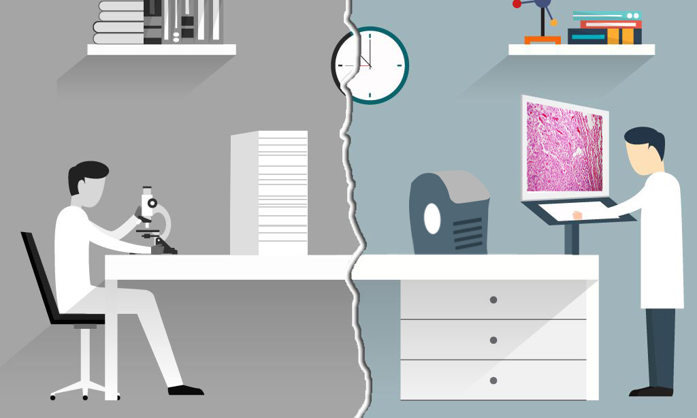

Cloud Storage
MedPoint’s Picture Archiving & Communications System allows doctors to replace their electron microscopes. MedPoint has developed the means to scan histological slides and store them on our cloud platform. Our cloud platform can be accessed from anywhere, and provides a convenient means for analyzing patient history.
Easier Collaboration & Second Medical Opinion
Clinicians & health care professionals no longer need to physically come into the lab to analyze slides. Collaborations between different departments and working from home can be made simple. Second medical opinions also become easier to obtain as the second institution simply needs access to the patient files.
